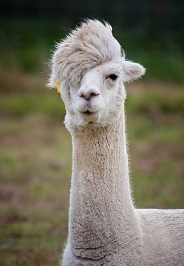

The Llama is a domesticated South American camelid, widely used as a meat and pack animal by Andean cultures since pre-Hispanic times. The height of a full-grown, full-size llama is 1.7 to 1.8 m (5.5 to 6.0 ft) tall at the top of the head, and can weigh between 130 and 200 kg (280 to 450 lb). At birth, a baby llama (called a cria) can weigh between 9 and 14 kg (20 and 30 lb). Llamas can live for about 20–30 years with good care. They are very social animals and live with other llamas as a herd. The wool produced by a llama is very soft and lanolin-free. Llamas are intelligent and can learn simple tasks after a few repetitions. When using a pack, they can carry about 25% to 30% of their body weight for 8–13 km (5–8 miles).
The llama and alpaca are only known in the domestic state, and are variable in size and of many colors, being often white, brown, or piebald. Some are grey or black. The guanaco and vicuña are wild, the former being endangered, and of a nearly uniform light-brown color, passing into white below. They certainly differ from each other, the vicuña being smaller, more slender in its proportions, and having a shorter head than the guanaco. The vicuña lives in herds on the bleak and elevated parts of the mountain range bordering the region of perpetual snow, amidst rocks and precipices, occurring in various suitable localities throughout Peru, in the southern part of Ecuador, and as far south as the middle of Bolivia. Its manners very much resemble those of the chamois of the European Alps; it is as vigilant, wild, and timid. The fiber is extremely delicate and soft, and highly valued for the purposes of weaving, but the quantity which each animal produces is minimal. Alpacas are descended from wild vicuna ancestors, while domesticated llamas are descended from wild guanaco ancestors, though a considerable amount of hybridization between the two species has occurred.
Differential characteristics between llamas and alpacas include the llama's larger size, longer head, and curved ears. Alpaca fiber is generally more expensive, but not always more valuable. Alpacas tend to have a more consistent color throughout the body. The most apparent visual difference between llamas and camels is that camels have a hump or humps and llamas do not.
Using llamas as guards has eliminated the losses to predators for many producers. The value of the livestock saved each year more than exceeds the purchase cost and annual maintenance of a llama. Although not every llama is suited to the job, most are a viable, nonlethal alternative for reducing predation, requiring no training and little care.